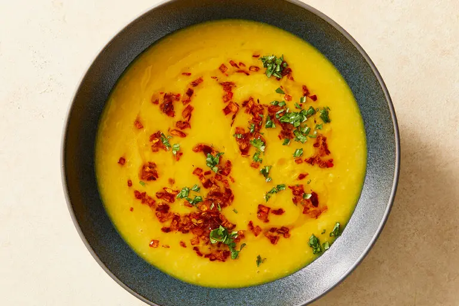

Slow Cooker Masala Dal

Description
This is one of my favorite meals to make for my partner. Getting things mixed in the slow cooker is quick, and making the tadka at the end isn't as intensive a thing to do after working all day.
Ingredients
- 1½ cups yellow split peas, rinsed (or chana dal, toor dal or split yellow moong dal)
- ½teaspoon turmeric
- 1½ teaspoons coarse kosher salt, or more to taste
- ½cup ghee or vegetable oil
- 1teaspoon cumin seeds
- 1large yellow onion, finely chopped (about 1½ cups chopped onion)
- ¼teaspoon crushed red pepper, or more to taste
- Chopped fresh cilantro, for topping
Directions
- Combine the split peas, turmeric and 4½ cups water in a 6- to 8-quart slow cooker. Cook on high until the peas are tender and easily crushed between your fingers, about 4 hours. (This keeps well on warm for at least four more hours.)
- Add the salt to the peas, then use a whisk to beat the peas vigorously; they should disintegrate fairly easily into a smooth purée.
- In a 12-inch skillet, warm the ghee over medium-high heat until a cumin seed sizzles vigorously as soon as it’s dropped in. Add the cumin seeds and let them sizzle for 10 seconds, then add the onion and cook, stirring constantly, until the onion shrinks, shrivels and gets very deeply browned, 10 to 18 minutes. If the onions threaten to blacken, turn down the heat and/or add a spoonful of cold water. Pay special attention to the last 5 minutes or so, after the onions have shriveled and started to brown; stir constantly and let them frizzle and darken, but not blacken. Immediately add the red pepper to the tadka, then pour the onions, spices and all the perfumed ghee into the dal. Swirl loosely. Taste and add more salt and/or crushed red pepper, if you like. Top with cilantro and serve.
Home